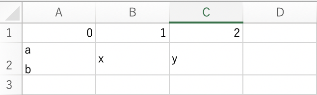
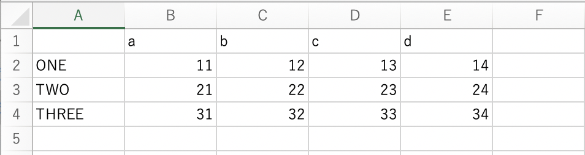

記事掲載：https://laptrinhcanban.com/ja
Python で CSV ファイルを処理する方法について説明します.csv.writer関数やcsv.DictWriter クラスなど使用しpython で csv ファイルを書き込む方法を学習します。また、CSV ファイルの挿入、引用符を含む CSV ファイルの作成、ヘッダーを含む CSV ファイルの作成など、Python で csv ファイルを作成する方法も学びます。
Pythonでcsvファイルを書き込む | csv.writer
Pythonでcsvファイルにリストを書き込む
Python で csv ファイルにリストを書き込むには、まずモードwでopen()関数またはのwithステートメントでファイルを開き、次にcsv.writer()関数で開いた csv ファイルを書き込む必要があります。
with open('./user/user.csv','w') as f: |
wモードでファイルを開くので、CSVファイルが既に存在する場合は古い内容を削除し、新しい内容をCSVファイルに上書きしますのでご注意ください。
open() 関数でファイルを開いた後、ファイル オブジェクトを取得し、それをf変数 に割り当てます。次に、f変数を csv.writer()関数の引数として指定します。結果は、コンテンツを書き込むことができるライター オブジェクト(writer object)が生成されます。
このライター オブジェクトを作成した後、このライター オブジェクトにwriterow() などのメソッドを使用して、Python でリストから csv ファイルにコンテンツを書き込むことができます。
上記の例では、2 行分のコンテンツを csv ファイルに書き込んでいます。次のコマンドで記録された内容を確認します。
with open('./user/user.csv','w') as f: |
上記の writerow() メソッドの引数を多次元リストとして指定すると、多次元リスト内の各リストがcsv ファイルの各行としてに書き込まれます。
l = [[11, 12, 13, 14], [21, 22, 23, 24], [31, 32, 33, 34]] |
コンテンツを挿入 | mode a
既存の csv ファイルにコンテンツを挿入するには、aモードで open()関数を使用して csv ファイルを開きます。csvファイルの書き方については、上記と同様にcsv.write関数やwriterow()やwriterows()などのメソッドを使ってPythonでcsvファイルを書き込んでいます。
with open('./user/user.csv', 'a') as f: |
区切り文字を指定
デフォルトでは、csv ファイルの区切り文字はカンマになります。ただし、記録中のcsvファイルの区切り文字を変更したい場合は、csv.writer関数に区切り文字引数を指定してください。
たとえば、次のように区切り文字をタブ文字\tとして指定します。
with open('./user/user.tsv', 'w') as f: |
区切り文字をスペースに置き換えたい場合は、delimiter=' 'で指定してください。
二重引用符の処理
デフォルトでは、csv ファイルを書き込むときに、a,b,cなどコンマを含む文字列は、次のように二重引用符で囲まれてcsvファイルに書き込まれます。
l = [[0, 1, 2], ['a,b,c', 'x', 'y']] |
Python で csv ファイルに書き込まれるすべての文字列リテラルに二重引用符を追加する場合は、次のように csv.writer 関数でquoting=csv.QUOTE_ALL引数を指定します。
with open('./user/user_quote_all.csv', 'w') as f: |
また、数字以外のすべての文字列に二重引用符を追加したい場合、次のようにquoting=csv.QUOTE_NONNUMERIC引数で指定することもできます。
with open('./user/user_quote_nonnumeric.csv', 'w') as f: |
csv.QUOTE_NONEを指定すると、csv ファイルへの書き込み時にすべての文字列リテラルが二重引用符で囲まれなくなります。ただし文字列に含まれる区切り文字がある時にも対応できるため、escapechar引数指定する必要があります。
with open('./user/user_quote_none.csv', 'w') as f: |
最後に、デフォルトでは二重引用符が使用されますが、次のように指定して別のものに変更することもできます。
with open('./user/user_quote_char.csv', 'w') as f: |
csvファイルに改行文字を書き込む
場合によっては'a\nb'など改行文字を含む文字列を csv ファイルに書き込む必要があります。

その場合、以下のように、その文字列を二重引用符で囲む必要があります。
l = [[0, 1, 2], ['a\nb', 'x', 'y']] |
ヘッダーを含むCSVファイルを処理
Python でヘッダー付きの csv ファイルを書きたい場合は、 writerow() メソッドを使用して、ヘッダーの内容を csv ファイルに書き込みます。
l = [[11, 12, 13, 14], [21, 22, 23, 24], [31, 32, 33, 34]] |
結果：

Pythonでcsvファイルを書き込む | csv.DictWriter
上記では、Python でリストを csv ファイルに書き込む方法を学びました。リストを使用する代わりに、次の構文で csv.DictWriter 関数を使用して、python で csv ファイルに辞書を書き込むこともできます。
csv.DictWriter ( f , fieldnames )
そこで、fはcsvファイルをopen()関数で開いたときに作成されるファイルオブジェクトであり、fieldnamesは辞書のキーの値をcsvファイルのヘッダー行として指定します。
例えば：
1 = {'a': 1, 'b': 2, 'c': 3} |
上記の例でfieldnamesは、辞書に含まれるキーによって指定された [‘a’, ‘b’, ‘c’]によってしてされます。次に writeheader() メソッドを使用して、これらのキー値を csv ファイルのヘッダー行に書き込みます。
辞書内の各値はwriterow() メソッドを使用してそれらを取得し、csv ファイルの各行に書き込みます。
また、特定のキーの値が存在しない場合は、10,,30のように空の値が追加されます。
次のように writerows() メソッドを使用して、一括で各行を csv ファイルのに書き込むこともできます。
with open('data/temp/sample_dictwriter_list.csv', 'w') as f: |
デフォルトでは、辞書に存在するすべてのキーをfieldnames引数に指定する必要があることに注意してください。そうしないと、エラーが発生します。
ValueError: dict contains fields not in fieldnames: 'b' |
いくつかのキーのみCSVファイルみに書き込みたい場合は、値を書き込むキーを指定後、次のようにextrasaction='ignore'引数を指定します。
with open('data/temp/sample_dictwriter_ignore.csv', 'w') as f: |
まとめ
上記 Kiyoshi は、Python で CSV ファイルを作成する方法について説明しました。レッスンの内容をよりよく理解するために、今日の例を書き直す練習をしてください。
そして、次のレッスンで Python の知識についてさらに学びましょう。
URL Link
ホーム › 初心者向けのpython学習>>17. pythonでのcsv・excel